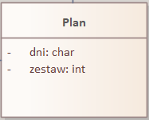

Aplikacja fitness
1. ANALIZA BIZNESOWA
1.1 Wstęp teoretyczny
Aplikacja fitness to narzędzie, które pomaga użytkownikom w prowadzeniu zdrowego trybu życia i osiąganiu swoich celów fitness. Działa ona na różnych platformach mobilnych, umożliwiając łatwy dostęp do treningów, monitorowania postępów oraz motywujących funkcji. Aplikacja oferuje różnorodne treningi, od siłowych i kardio, które można dostosować do indywidualnych preferencji i poziomu zaawansowania. Użytkownicy mają również możliwość śledzenia aktywności fizycznej, takiej jak liczba kroków, spalone kalorie i czas treningu, co pozwala im na kontrolę postępów i utrzymanie motywacji.
1.2 Opis kontekstu dziedziny problemowej
Ludzie coraz bardziej zwracają uwagę na swoje zdrowie i kondycję, co prowadzi do wzrostu zapotrzebowania na narzędzia, które pomagają im w tym procesie.
Wiele osób boryka się z wyzwaniami związanymi z motywacją, brakiem czasu czy niestabilnym planem treningowym. Aplikacje fitness wychodzą naprzeciw tym problemom, oferując użytkownikom elastyczność, wygodę i spersonalizowane rozwiązania.
W kontekście dziedziny problemowej, aplikacje fitness stawiają sobie za cel dostarczenie użytkownikom różnorodnych treningów, które można dostosować do indywidualnych preferencji i poziomu zaawansowania
1.3 Kontekstowy diagram DPU
Diagram 01: Kontekstowy diagram DPU
1.4 Research aplikacji "7 minute workout"
7 minute workout:
To aplikacja treningowa, która oferuje serię krótkich, intensywnych treningów o długości 7 minut. Aplikacja zawiera 12 ćwiczeń, które są wykonywane przez 30 sekund każde, z przerwami 10-sekundowymi między nimi. Celem aplikacji jest zapewnienie skutecznego treningu, który można wykonać w krótkim czasie. Aplikacja jedną z najpopularniejszych aplikacji treningowych dostępnych w sklepach z aplikacjami mobilnymi. Aplikacja została pobrana ponad 10 milionów razy i ma pozytywne oceny od użytkowników.

Scenariusz działania aplikacji "7 minute workout":
Pobranie i instalacja aplikacji: Użytkownik pobiera aplikację z odpowiedniego sklepu z aplikacjami mobilnymi i instaluje ją na swoim smartfonie. Wybór treningu: Po uruchomieniu aplikacji, użytkownik wybiera trening "7 minute workout" z listy dostępnych treningów. Rozpoczęcie treningu: Po wybraniu treningu, użytkownik rozpoczyna trening. Aplikacja pokazuje kolejne ćwiczenia, czas trwania każdego ćwiczenia i przerwy między nimi. Aplikacja również dostarcza wskazówek dotyczących poprawnej techniki wykonywania ćwiczeń. Wykonywanie ćwiczeń: Użytkownik wykonuje kolejne ćwiczenia, trzymając się wyznaczonego czasu i przerw między nimi. Aplikacja odlicza czas i zapewnia dźwiękowe powiadomienia o końcu każdego ćwiczenia i początku przerwy.
- Szybki i efektywny trening w krótkim czasie.
- Wygodny interfejs użytkownika i prosta nawigacja.
- Wbudowany licznik kalorii i funkcja monitorowania postępów
- Możliwość wykonywania treningów w dowolnym miejscu z dostępem do smartfona
- Dostępność aplikacji na różnych platformach mobilnych.
- Brak konieczności korzystania z dodatkowego sprzętu treningowego.
Plusy:
- Może być zbyt intensywny dla niektórych użytkowników.
- Nie uwzględnia różnych poziomów zaawansowania.
- Brak treningu siłowego i wytrzymałościowego.
- Może nie dostarczyć wystarczającego wyzwania dla bardziej zaawansowanych użytkowników.
- Nie oferuje personalizacji treningów na podstawie celów i preferencji użytkowników.
- Może nie być wystarczająco skuteczny dla osób, które potrzebują bardziej zindywidualizowanego podejścia do treningu.
Minusy:
2. ANALIZA WYMAGAŃ NA SI
2.1 Tytuł projektowanego systemu
Aplikacja fitness
2.2 Cel i opis podstawowych zadań szczegółowych
Celem aplikacji fitness jest dostarczenie użytkownikom narzędzi i zasobów, które pomagają im prowadzić zdrowy tryb życia, osiągać cele fitness i utrzymywać motywację do regularnego treningu. Aplikacja ma służyć jako wsparcie w rozwoju siły, kondycji.
Opis podstawowych zadań szczegółowych:
Opis podstawowych zadań szczegółowych:
- Użytkownik po zainstalowaniu aplikacji jest proszony o wypełnienie informacji o sobie takich jak: płeć, waga, wzrost, doświadczenie z treningami oraz cel do którego dąży.
- Na podstawie informacji z pierwszego punktu jest tworzony plan treningowy, który może zostać zmodyfikowany pod względem ćwiczeń, powtórzeń, serii.
- Aplikacja wysyła przypomnienia użytkownikowi o treningu oraz motywuje go do działania w postaci postępu treningowego oraz kalendarzowi odbytych treningów.
- Użytkownikowi podczas treningu wyświetla się czas trwania treningu, nazwa ćwiczenia, numer serii i instruktaż jak dane ćwiczenie powinno zostać wykonane pod względem efektywności. Po wykonanej serii użytkownik klika znak plusa aby dodać wykonaną serię, po czym włącza się stoper na przerwę między seriami. Po wykonanej ostatniej serii danego ćwiczenia aplikacja przełącza na kolejne ćwiczenie aż do ukończenia treningu.
- Użytkownik może połączyć aplikację z smartwatchem, dzięki czemu może śledzić tętno, kroki, przebyty dystans i poziom spO2 oraz monitorować jakość snu.
- Dzięki kalendarzowi użytkownik może wrócić do wcześniejszych dni i sprawdzać treningi
2.3 Systemowy słownik danych
Administrator - osoba odpowiedzialna za zarządzanie, kontrolę i utrzymanie systemu.
Ćwiczenia - aktywności ruchowe, które pomagają użytkownikowi osiągnąć cel.
Dane - zbiór informacji o użytkowniku dostarczanych bezpośrednio od niego lub przez urządzenie inteligentne.
Historia - ćwiczenia wykonane przez użytkownika w ramach używania aplikacji.
Inteligentny zegarek - urządzenie umożliwiające monitorowanie aktywności fizycznej.
Karta kredytowa - forma płatności wymagająca współpracy z systemem płatności obsługującym karty kredytowe.
Klient - osoba korzystająca z usług aplikacji, składa się z takich informacji jak: cel treningu, płci, wagi, doświadczenia w treningach, wiek, wzrost, typ sylwetki.
Plan - spersonalizowany zestaw ćwiczeń i aktywności fizycznych, opracowany, aby pomóc użytkownikowi w osiągnięciu celu.
Przelewy24 - forma płatności wymagająca współpracy z systemem Przelewy24.
Subskrypcja - model płatności, w ramach którego użytkownik płaci regularną opłatę.
Trening - sesja ćwiczeń odbywana przez użytkownika.
Użytkownik aplikacji - osoba podlegająca autoryzacji w systemie, posiada e-mail, login, płeć, wiek
Zdrowie - zbiór parametrów życiowych użytkownika dostarczanych przez urządzenie inteligentne.
Program - wybrany przez użytkownika spersonalizowany formularz, który pomaga użytkownikowi w osiągnięciu jego wybranego celu, składa się z celu treningowego, częstotliwości treningu, daty, doświadczenia w treningu, typu posiadanej sylwetki, wagi oraz wzrostu.
Ćwiczenia - aktywności ruchowe, które pomagają użytkownikowi osiągnąć cel.
Dane - zbiór informacji o użytkowniku dostarczanych bezpośrednio od niego lub przez urządzenie inteligentne.
Historia - ćwiczenia wykonane przez użytkownika w ramach używania aplikacji.
Inteligentny zegarek - urządzenie umożliwiające monitorowanie aktywności fizycznej.
Karta kredytowa - forma płatności wymagająca współpracy z systemem płatności obsługującym karty kredytowe.
Klient - osoba korzystająca z usług aplikacji, składa się z takich informacji jak: cel treningu, płci, wagi, doświadczenia w treningach, wiek, wzrost, typ sylwetki.
Plan - spersonalizowany zestaw ćwiczeń i aktywności fizycznych, opracowany, aby pomóc użytkownikowi w osiągnięciu celu.
Przelewy24 - forma płatności wymagająca współpracy z systemem Przelewy24.
Subskrypcja - model płatności, w ramach którego użytkownik płaci regularną opłatę.
Trening - sesja ćwiczeń odbywana przez użytkownika.
Użytkownik aplikacji - osoba podlegająca autoryzacji w systemie, posiada e-mail, login, płeć, wiek
Zdrowie - zbiór parametrów życiowych użytkownika dostarczanych przez urządzenie inteligentne.
Program - wybrany przez użytkownika spersonalizowany formularz, który pomaga użytkownikowi w osiągnięciu jego wybranego celu, składa się z celu treningowego, częstotliwości treningu, daty, doświadczenia w treningu, typu posiadanej sylwetki, wagi oraz wzrostu.
3. ANALIZA FUNKCJONALNA SI
3.1 Opisany model systemowy SI
Diagram 02: Diagram Przypadków Użycia
4. MODELOWANIE ANALITYCZNE SI
4.1 Model Analityczny SI
Diagram 03: Diagram analityczny
5. PROJEKT MODELU DANYCH SI
5.1 Implementacyjny diagram klas
Diagram 04: Diagram klas
5.2 Diagram obiektów dla następującej sytuacji
“Pan Andrzej kupił subskrypcję Aplikacji Fitness na okres 1 miesiąca poprzez system Przelewy 24.
Po uruchomieniu aplikacji Andrzej wypełnił formularz dotyczący jego osoby wcześniej wybierając jako swój cel - "Zrzucić wagę". Mężczyzna chcąc wygenerować plan, zaznaczył poniedziałek, środę oraz sobotę po czym zostały mu przedstawione sugerowane plany treningowe. Panu Andrzejowi nie spodobał się zestaw ćwiczeń na środę z powodu kontuzji kolana, więc zamienił ćwiczenie "Przysiady ze sztangą" na "Wykroki z hantlami" w systemie 4x10 powtórzeń.
Następnego dnia (Poniedziałek) mężczyźnie przyszło powiadomienie o treningu, więc wybrał się na siłownie i wybrał opcję "Rozpocznij trening", zostało mu wyświetlone ćwiczenie wraz z instruktażem i wytycznymi. Po treningu Pan Andrzej wyświetlił spalone kalorie, chcąc wiedzieć jak bardzo przyłożył się do treningu.”
Diagram 05: Diagram obiektu
6. MODELOWANIE DYNAMIKI SI
6.1 Wybierz Program
Diagram 06: Diagram Sekwencji dla wyboru diagramu
Diagram 07: Diagram analityczny dla wybierz program
Tabela 01: Scenariusz PU - Wybierz program
Interfejs 01: Wybierz program
Diagram czynności 1: Wybierz program
- System wyświetla parametry do ustalenia
- Użytkownik wybiera cel
- Użytkownik wybiera swoją wagę
- Użytkownik podaje swój wiek i wzrost
- Użytkownik podaje typ sylwetki
- Użytkownik wybiera częstotliwość treningu
- Użytkownik wskazuje swoje doświadczenie
- System zapisuje odpowiedzi
- System generuje plan treningowy
- System wyświetla plan
- Użytkownik zatwierdza plan
- System wyświetla plan
- Użytkownik wybiera opcję “edytuj plan”
- Użytkownik wybiera ćwiczenia do dodania/usunięcia
- System aktualizuje plan według preferencji użytkownika
- System przekierowuje użytkownika do 10 ścieżki
- System wyświetla plan
- Użytkownik wybiera opcję “wprowadź na nowo”
- System usuwa obecnie wprowadzone informację
- System przekierowuje użytkownika do 1 ścieżki
6.2 Generuj plan
Diagram 08: Diagram Sekwencji - generuj plan
Diagram 09: Diagram analityczny- generuj plan

Tabele: Scenariusz PU - Generuj plan
Interfejsy 02: Generuj plan
Diagram czynności 02: Generuj plan
- System wyświetla dostępne opcję dostosowania planu
- Użytkownik wybiera preferowane dni
- System generuj listę ćwiczeń
- System wyświetla listę ćwiczeń
- Użytkownik zatwierdza listę ćwiczeń
- System zapisuje informacje o bazy danych
Ścieżka główna:
- System wyświetla listę ćwiczeń
- Użytkownik wybiera opcję “edytuj listę”
- System wyświetla listę dostępnych ćwiczeń
- Użytkownik dodaje/usuwa ćwiczenia z listy
- System zapisuje plan zgodnie z preferencjami
- System przekierowuje do punktu 5 ścieżki głównej
Ścieżka poboczna 5a:
6.3 Wprowadź ćwiczenie
Diagram 10: Diagram Sekwencji -Wprowadź ćwiczenie
Diagram 11:Diagram analityczny- Wprowadź ćwiczenie
Tabela 08: Scenariusz PU - Wprowadź ćwiczenie
Interfejs 03: Wprowadź ćwiczenie
Diagram czynności 03: Wprowadź ćwiczenie
- System wyświetla obecnie znajdujące się w systemie ćwiczenia
- Administrator wylogowuje się z systemu
Ścieżka główna:
- System wyświetla obecnie znajdujące się w systemie ćwiczenia
- Administrator wybiera opcję “dodaj ćwiczenie”
- Administrator wprowadza nowe ćwiczenie do bazy danych
- System aktualizuje bazę danych
- System przekierowuje do punktu 1 ścieżki głównej
Ścieżka poboczna 2a:
- System wyświetla obecnie znajdujące się w systemie ćwiczenia
- Administrator wybiera opcję “zmień istniejące”
- Administrator modyfikuje wprowadzone ćwiczenie
- System aktualizuje w bazie danych
- System przekierowuje do punktu 1 ścieżki głównej
Ścieżka poboczna 2b:
- System wyświetla obecnie znajdujące się w systemie ćwiczenia
- Administrator wybiera opcję “usuń istniejące”
- Administrator usuwa istniejące ćwiczenie
- System aktualizuje bazę danych
- System przekierowuje do punktu 1 ścieżki głównej
Ścieżka poboczna 2c:
6.4 Rozpocznij trening
Diagram 12: Diagram Sekwencji - Rozpocznij trening
Diagram 13:Diagram analityczny- Rozpocznij trening
Tabele: Scenariusz PU - Rozpocznij trening
Interfejs 09: Rozpocznij trening
Diagram czynności 14: Rozpocznij trening
- System wyświetla informację o obecnym treningu
- Użytkownik kontynuuje trening
- Użytkownik kończy trening
- System wyświetla i zapisuje informację o treningu w bazie danych
- Użytkownik wraca do ekranu głównego
Ścieżka główna:
- System wyświetla informację o obecnym treningu
- Użytkownik wybiera opcję “zatrzymaj trening”
- Użytkownik tymczasowo zatrzymuje trening
- System aktualizuje stan treningu
- Użytkownik wzniawia trening
- System przekierowuje do punktu 1 ścieżki głównej
Ścieżka poboczna 2a:
- System wyświetla informację o obecnym treningu
- Użytkownik wybiera opcję “otwórz szczegóły ćwiczenia”
- Użytkownik otwiera szczegóły ćwiczenia
- System wyświetla szczegóły ćwiczenia
- Użytkownik zamyka szczegóły ćwiczenia
- System przekierowuje do punktu 1 ścieżki głównej
Ścieżka poboczna 2b:
6.5 Wyświetl historię
Diagram 15: Diagram Sekwencji - Wyświetl historię
Diagram 16: Diagram analityczny- Wyświetl historię
Tabela 15: Scenariusz PU - Wyświetl historię
Interfejs 05: Wyświetl historię
Diagram czynności 17: Wyświetl historię
- System odczytuje z bazy danych informację o poprzednich treningach
- System wyświetla znalezione informację o treningach
- Użytkownik wraca do poprzedniego ekranu
Ścieżka główna:
- System wyświetla znalezione informację o treningach
- Użytkownik wybiera opcję “sortuj/filtruj historię”
- System wyszukuje poprzednie treningu na podstawie ustawień
- System przekierowuje użytkownika do punktu 2 ścieżki głównej
Ścieżka poboczna 3a:
6.6 Opłać subskrypcję
Diagram 18: Diagram Sekwencji - Opłać subskrypcję
Tabela 16: Scenariusz PU- Opłać subskrypcję
Interfejs 06: Opłać subskrypcję
Diagram czynności 19: Opłać subskrypcję
- System wyświetla możliwe opcje subskrypcji
- Użytkownik wybiera jedną z możliwych opcji
- System wyświetla dostępne formy płatności
- Użytkownik wybiera płatność kartą kredytową
- System wyświetla ekran wprowadzenia danych do płatności
- Użytkownik podaje dane do płatności
- System wysyła żądanie z danymi do płatności do systemu operatora kart
- System operatora kart wysyła odpowiedź o udanej płatności
- System aktualizuje stan subskrypcji użytkownika w bazie danych
- Użytkownik wraca do ekranu głównego
Ścieżka główna:
- Użytkownik wraca do ekranu głównego
Ścieżka poboczna 2a
- Użytkownik wybiera płatność poprzez system Przelewy24
- System przekierowuje użytkownika do strony płatności Przelewy24
- System otrzymuje odpowiedź od systemu Przelewy24 o stanie płatności
- System przekierowuje do punktu 9 ścieżki głównej
Ścieżka poboczna 4a
- Użytkownik wraca do poprzedniego ekranu
- System zamyka stronę
Ścieżka poboczna 4b
- System operatora kart wysyła odpowiedź o nieudanej płatności
- System przekierowuje do punktu 9 ścieżki głównej
Ścieżka poboczna 8a
6.7 Monitoruj zdrowie
- System wyświetla informacje przesyłane przez urządzenie inteligentne
- Użytkownik wraca do poprzedniego ekranu
Ścieżka główna:
- System wyświetla informacje przesyłane przez urządzenie inteligentne
- System wyświetla szczegóły
- Użytkownik zamyka szczegóły
- system przekierowywuje do 1 punktu ścieżki głównej